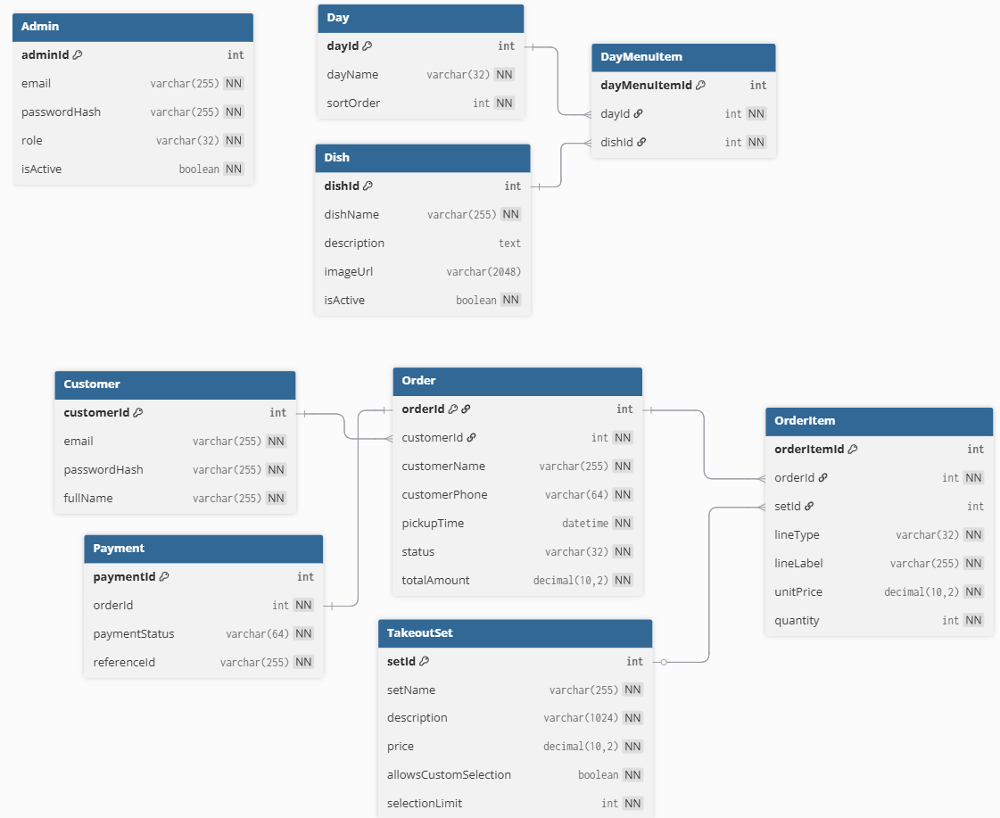

Dependencies & Setup
Everything you need to obtain, install, and run Veg Buffet on your own machine — from scratch. Assumes you know nothing about the project beforehand.
Where to Get the Code & Where It Is Hosted
Live Hosted Application
- Public website: https://veg-buffet-web.onrender.com/
- Staff/Admin portal: https://veg-buffet-web.onrender.com/admin/login.php
- Hosted on: Render (Docker Web Service, free tier)
- Database hosted on: TiDB Cloud (MySQL-compatible serverless, free tier)
Source Code
The full source code is available on GitHub:
https://github.com/duynguyenxc/SENIOR-PROJECTTo download it:
- Option A — Clone with Git:
git clone https://github.com/duynguyenxc/SENIOR-PROJECT.git - Option B — ZIP download: On GitHub, click the green Code button → Download ZIP, then extract.
System Requirements
This project runs entirely inside Docker containers. You do not need to install PHP, Apache, or MariaDB separately — Docker handles everything automatically.
| Requirement | Minimum | Notes |
|---|---|---|
| Operating System | Windows 10/11, macOS 13+, or Ubuntu 22.04+ | Any OS that supports Docker Desktop |
| RAM | 4 GB | 8 GB recommended for comfortable multitasking |
| Disk Space | 2 GB free | For Docker images and the database data volume |
| Internet | Required on first run | Docker pulls the PHP and MariaDB images from Docker Hub on first startup |
| Web Browser | Any modern browser | Chrome, Firefox, Edge, or Safari (latest version) |
| Specialized Hardware | None required | Standard desktop or laptop computer is sufficient |
All Dependencies
The table below lists every software platform, language, tool, library, and service the application depends on.
| Type | Name | Version | Role |
|---|---|---|---|
| Language | PHP | 8.3 | All server-side logic. Runs inside the Docker container via the official php:8.3-apache image. |
| Web Server | Apache HTTP Server | 2.4 | Serves PHP pages. Comes bundled in the official PHP Docker image. mod_rewrite is enabled. |
| Database | MariaDB | 11.4 | Relational database (fully MySQL-compatible). Runs in a separate Docker container. The production environment uses TiDB Cloud instead, which is also MySQL-compatible. |
| PHP Extension | pdo_mysql | (bundled) | PHP Data Objects driver for MySQL/MariaDB. Installed automatically in the Dockerfile. |
| Containerization | Docker Desktop | Latest stable | Runs the application, database, and phpMyAdmin as isolated containers using Docker Compose. |
| Container Orchestration | Docker Compose | v2 (included with Docker Desktop) | Defines and manages all three containers via docker-compose.yml. |
| Payment Service | Stripe Checkout | API v1 (latest) | Handles online payment. Integrated server-side via Stripe's PHP API (loaded via HTTP, no Composer required). Currently in test/sandbox mode. |
| Database GUI | phpMyAdmin | 5 | Browser-based database admin interface. Runs as a Docker container for local development only. |
| Production Host | Render | Docker Web Service | Hosts the PHP/Apache application container. Configuration defined in render.yaml. |
| Production Database | TiDB Cloud | Serverless (MySQL-compatible) | Cloud-hosted database for the live deployment. Connects over SSL. |
| Version Control | Git | Any recent version | Used to clone the repository and manage code changes. |
| Frontend | HTML, CSS, JavaScript | N/A (no build step) | Plain HTML served by PHP. CSS in web/assets/style.css, JS in web/assets/app.js. No frameworks or bundlers. |
| External Libraries | Stripe PHP SDK | Bundled in web/lib/payment.php |
Makes API calls to Stripe for session creation and payment verification. Loaded via require, no Composer used. |
No Build Step Required
There is no compilation, transpilation, or linking step.
PHP is interpreted at runtime. CSS and JavaScript are plain files served directly.
The only "build" step is running docker compose up --build, which assembles the Docker image from the Dockerfile.
Local Installation — Step by Step
This guide assumes you have never used Docker or a terminal before. Follow each step in order.
Step 0 — Install Docker Desktop
Docker Desktop is the only software you need to install. It automatically sets up PHP, Apache, and MariaDB inside isolated "containers" — you do not need to install any of those manually.
- Go to docker.com/products/docker-desktop and download the version for your operating system (Windows / macOS / Linux).
-
Run the installer. Accept all default options and click Next/Install until finished.
- Windows: If a dialog appears asking about "WSL 2", click OK. WSL 2 is a Windows feature that Docker requires to run.
- macOS: Drag Docker into the Applications folder as usual.
- Once installed, open Docker Desktop from the Start menu (Windows) or Launchpad (macOS).
- Wait until the status bar in the bottom-left of Docker Desktop turns green and shows "Engine running" (or the whale icon turns blue). This usually takes 30–60 seconds.
To verify Docker was installed correctly, open a terminal and run:
docker --versionYou should see something like Docker version 27.x.x, build .... That means it is working.
How to Open a Terminal
A terminal (also called a command prompt or shell) is a text window where you type commands to control the computer. All commands in this guide are run here.
-
Windows: Press Windows + R, type
cmd, and press Enter. Alternatively, search for "Command Prompt" in the Start menu. If you have Git installed, you can also use Git Bash. - macOS: Press Cmd + Space, type "Terminal", and press Enter.
- Ubuntu / Linux: Press Ctrl + Alt + T.
Get the Project Code
Option A — Clone with Git (recommended):
If you do not have Git, download it from git-scm.com and install with all default options.
Open a terminal and run these two commands:
git clone https://github.com/duynguyenxc/SENIOR-PROJECT.git
cd SENIOR-PROJECT
The git clone command creates a folder called SENIOR-PROJECT in your current location.
The cd SENIOR-PROJECT command moves you inside that folder.
Option B — Download ZIP:
Go to github.com/duynguyenxc/SENIOR-PROJECT,
click the green Code button → Download ZIP.
Extract the ZIP file. You will get a folder named SENIOR-PROJECT-main.
Open a terminal and navigate into that folder. For example, if you extracted to the Desktop:
cd %USERPROFILE%\Desktop\SENIOR-PROJECT-maincd ~/Desktop/SENIOR-PROJECT-maindir (Windows) or ls (macOS/Linux).
You must see the file docker-compose.yml listed.
If you do not see it, you are in the wrong folder.
Create the .env Configuration File
The application reads sensitive settings (such as API keys) from a file named .env.
This file is not included in the repository and must be created manually.
On Windows:
- Open Notepad (search in the Start menu).
- Paste the content shown below into Notepad.
- Go to File → Save As.
- Navigate to the
SENIOR-PROJECTfolder (the one containingdocker-compose.yml). - In the File name field, type
.env(include the leading dot). - In the Save as type dropdown, select All Files (*.*).
- Click Save.
On macOS / Linux:
Run this in your terminal (from inside the project folder):
touch .env && open -e .env # macOS — opens in TextEdit
# or: nano .env # LinuxContents of the .env file:
APP_URL=http://localhost:8080
STRIPE_SECRET_KEY=sk_test_YOUR_KEY_HERE
STRIPE_PUBLISHABLE_KEY=pk_test_YOUR_KEY_HERE
Replace sk_test_YOUR_KEY_HERE and pk_test_YOUR_KEY_HERE with your actual Stripe test keys.
See the Stripe Setup section below for how to get them.
Start the Application
Make sure Docker Desktop is running (look for the blue whale icon in the taskbar/menu bar). In your terminal, inside the project folder, run:
docker compose up --buildThe first time you run this, Docker will automatically download the required images (PHP 8.3 + Apache, MariaDB 11.4, phpMyAdmin). This requires an internet connection and may take 3–10 minutes depending on your network speed. You will see a lot of scrolling text — that is completely normal.
Once the downloads finish, Docker will automatically:
- Build the web server image from
web/Dockerfile - Create the
vegbuffetdatabase - Run
db/init/01_schema.sqlto create all tables - Run
db/init/02_seed.sqlto insert sample data and the default admin account - Start 3 containers: the web app, the database, and phpMyAdmin
The application is ready when you see output similar to this:
senior-project-db-1 | [Note] mariadbd: ready for connections.
senior-project-web-1 | AH00558: apache2: Could not reliably determine ...
senior-project-web-1 | AH00292: Apache/2.4.x ... resuming normal operationsThe terminal will keep showing logs and will not return to a command prompt — this is expected. The containers are running in the foreground. Do not close this terminal window.
-
"port is already allocated" — Port 8080 or 8081 is already in use by another program.
Stop that program or change the port numbers in
docker-compose.yml. - "docker: command not found" — Docker Desktop is not installed or not open. Open Docker Desktop first, wait for it to finish starting, then try again.
- "Cannot connect to the Docker daemon" — Docker Desktop has not finished starting yet. Wait until the whale icon turns blue/green, then try again.
Open the Application in a Browser
Open any web browser (Chrome, Firefox, Edge, Safari) and go to one of the addresses below. No additional setup is needed — the app is already running.
| Service | URL | Description |
|---|---|---|
| Customer Website | http://localhost:8080 | The public-facing site where customers browse and order |
| Staff / Admin Portal | http://localhost:8080/admin/login.php | Internal login for staff and administrators |
| Database GUI | http://localhost:8081 | phpMyAdmin — inspect and edit database records visually |
localhost is a name that points to your own computer.
http://localhost:8080 means "connect to port 8080 on this machine,"
where Docker is running the web server. No one else on the internet can access this address.
Log In for the First Time
The file db/init/02_seed.sql automatically creates a default Super Admin account
when the database initializes. Use these credentials to log into the staff portal:
| Field | Value |
|---|---|
| Login URL | http://localhost:8080/admin/login.php |
admin@vegbuffet.com | |
| Password | password |
password is intentionally simple for local development convenience.
Do not use it in a production deployment.
To test the customer experience, register a new customer account at: http://localhost:8080/register.php. Customer accounts and staff/admin accounts are completely separate systems.
Stopping the Application
When you are done, go back to the terminal that is running Docker and press Ctrl + C. Docker will stop the containers. Your database data is preserved.
To remove the containers but keep the data volume:
docker compose downTo completely reset everything including the database (all data will be lost):
docker compose down -vNext time you want to run the app (no rebuild needed):
docker compose upConfiguration Reference
All local configuration lives in the .env file in the project root.
Database credentials are already set in docker-compose.yml and do not need to be in .env for local development.
| Variable | Default | Description |
|---|---|---|
APP_URL |
http://localhost:8080 |
Base URL of the app. Must match what you type in the browser. Used to build Stripe's redirect URL after payment. |
STRIPE_SECRET_KEY |
(empty) | Your Stripe secret key. Starts with sk_test_ for test mode. Required for payment to work. |
STRIPE_PUBLISHABLE_KEY |
(empty) | Your Stripe publishable key. Starts with pk_test_ for test mode. |
Project File Structure
Senior-Project/
├── docker-compose.yml ← Defines the 3 containers (web, db, phpmyadmin)
├── .env ← Your private config (you create this file)
├── render.yaml ← Render deployment config
├── db/
│ └── init/
│ ├── 01_schema.sql ← Creates all database tables
│ └── 02_seed.sql ← Inserts initial data + admin account
└── web/
├── Dockerfile ← Builds the PHP/Apache container
├── index.php ← Homepage
├── menu.php ← Weekly menu
├── takeout.php ← Takeout ordering
├── cart.php ← Cart
├── checkout.php ← Checkout form
├── pay.php ← Initiates Stripe payment
├── success.php ← Post-payment confirmation
├── register.php ← Customer registration
├── login.php ← Customer login
├── my_orders.php ← Customer order history
├── admin/
│ ├── login.php ← Staff login
│ ├── index.php ← Order fulfillment queue (staff + admin)
│ ├── history.php ← Order history
│ ├── menu.php ← Menu management (SuperAdmin only)
│ ├── takeout.php ← Takeout set management (SuperAdmin only)
│ ├── staff.php ← Staff account management (SuperAdmin only)
│ └── reports.php ← Sales analytics (SuperAdmin only)
├── lib/ ← Shared PHP business logic
│ ├── auth.php ← Login, sessions, role checks
│ ├── db.php ← PDO database connection
│ ├── orders.php ← Order creation, status updates
│ ├── payment.php ← Stripe integration
│ ├── reporting.php ← Sales report queries
│ ├── menu_catalog.php
│ ├── takeout_catalog.php
│ ├── staff.php
│ ├── upload.php ← Image upload handling
│ └── layout.php ← Shared HTML header/footer
├── assets/
│ ├── style.css ← Application styles
│ └── app.js ← Client-side JavaScript
└── uploads/ ← User-uploaded imagesDatabase Schema
Database Engine & Name
- Engine: MariaDB 11.4 (MySQL-compatible, InnoDB storage engine)
- Database name:
vegbuffet - Initialization: When Docker starts for the first time, it automatically runs
db/init/01_schema.sql(creates tables) anddb/init/02_seed.sql(inserts initial data). No manual setup is needed.
Entity-Relationship Diagram

Table Descriptions
| Table | Purpose |
|---|---|
Admin | Staff and Super Admin accounts. role is either 'Staff' or 'SuperAdmin'. isActive flag disables access without deleting the account. |
Customer | Registered customer accounts. Separate from Admin — no shared login. |
Day | The 7 days of the week (Monday–Sunday) with a sort order. Static; not editable through the UI. |
Dish | All dishes that can appear on the weekly menu. Reusable across multiple days. |
DayMenuItem | Many-to-many join table linking dishes to days, forming the weekly menu. |
TakeoutSet | Predefined takeout boxes customers can order. allowsCustomSelection marks sets where customers enter their own dish list. |
Order | One record per customer order. Stores customer info, pickup time, total, special instructions, and current status. |
OrderItem | Individual line items within an order (one row per set chosen). |
Payment | One-to-one with Order. Stores the Stripe session ID and payment status. |
Order Status Lifecycle
The status column in the Order table moves through the following values:
- Pending — order created, awaiting Stripe payment confirmation
- Paid — Stripe confirmed payment; order appears in the staff queue
- Preparing — staff started preparing the order
- Ready — order is packed, ready for customer pickup
- Completed — customer has picked up the order
- Cancelled — cancelled by Super Admin, or payment was abandoned
Full SQL CREATE Statements (db/init/01_schema.sql)
These are the exact SQL statements that create the database structure:
create table if not exists Admin (
adminId int not null auto_increment,
email varchar(255) not null,
passwordHash varchar(255) not null,
role varchar(32) not null default 'Staff',
isActive boolean not null default 1,
createdTime datetime not null,
primary key (adminId),
unique key uq_admin_email (email)
) engine=InnoDB;
create table if not exists Customer (
customerId int not null auto_increment,
email varchar(255) not null,
passwordHash varchar(255) not null,
fullName varchar(255) not null,
phone varchar(64) null,
createdTime datetime not null,
primary key (customerId),
unique key uq_customer_email (email)
) engine=InnoDB;
create table if not exists Day (
dayId int not null auto_increment,
dayName varchar(32) not null,
sortOrder int not null,
primary key (dayId),
unique key uq_day_name (dayName),
unique key uq_day_sort (sortOrder)
) engine=InnoDB;
create table if not exists Dish (
dishId int not null auto_increment,
dishName varchar(255) not null,
description text null,
imageUrl varchar(2048) null,
isActive boolean not null default 1,
primary key (dishId),
unique key uq_dish_name (dishName)
) engine=InnoDB;
create table if not exists DayMenuItem (
dayMenuItemId int not null auto_increment,
dayId int not null,
dishId int not null,
primary key (dayMenuItemId),
unique key uq_day_dish (dayId, dishId),
key idx_daymenu_day (dayId),
key idx_daymenu_dish (dishId),
constraint fk_daymenu_day
foreign key (dayId) references Day(dayId)
on delete cascade
on update cascade,
constraint fk_daymenu_dish
foreign key (dishId) references Dish(dishId)
on delete restrict
on update cascade
) engine=InnoDB;
create table if not exists TakeoutSet (
setId int not null auto_increment,
setName varchar(255) not null,
description varchar(1024) not null,
price decimal(10,2) not null,
imageUrl varchar(2048) null,
isAvailable boolean not null,
sortOrder int not null default 0,
allowsCustomSelection boolean not null default 0,
selectionLimit int not null default 0,
primary key (setId),
unique key uq_set_name (setName),
key idx_set_available (isAvailable)
) engine=InnoDB;
create table if not exists `Order` (
orderId int not null auto_increment,
dailyOrderNumber int not null default 0,
customerId int null,
customerName varchar(255) not null,
customerPhone varchar(64) not null,
pickupTime datetime not null,
status varchar(32) not null,
totalAmount decimal(10,2) not null default 0.00,
specialInstructions text null,
allergyNotes text null,
createdTime datetime not null,
updatedTime datetime not null,
primary key (orderId),
key idx_order_customer (customerId),
key idx_order_daily (dailyOrderNumber),
key idx_order_status (status),
key idx_order_created (createdTime),
key idx_order_pickup (pickupTime)
) engine=InnoDB;
create table if not exists OrderItem (
orderItemId int not null auto_increment,
orderId int not null,
setId int null,
lineType varchar(32) not null default 'set',
lineLabel varchar(255) not null,
unitPrice decimal(10,2) not null default 0.00,
lineDescription text null,
lineNotes text null,
imageUrl varchar(2048) null,
quantity int not null,
primary key (orderItemId),
key idx_orderitem_order (orderId),
key idx_orderitem_set (setId),
constraint fk_orderitem_order
foreign key (orderId) references `Order`(orderId)
on delete cascade
on update cascade,
constraint fk_orderitem_set
foreign key (setId) references TakeoutSet(setId)
on delete set null
on update cascade
) engine=InnoDB;
create table if not exists Payment (
paymentId int not null auto_increment,
orderId int not null,
paymentStatus varchar(64) not null,
referenceId varchar(255) not null,
primary key (paymentId),
unique key uq_payment_reference (referenceId),
unique key uq_payment_order (orderId),
constraint fk_payment_order
foreign key (orderId) references `Order`(orderId)
on delete cascade
on update cascade
) engine=InnoDB;Accessing the Database with phpMyAdmin (Local)
When running locally, you can inspect and manage the database at http://localhost:8081.
- Username:
root - Password:
rootpass - Database:
vegbuffet
Stripe Payment Setup
Veg Buffet uses Stripe Checkout for payment processing, currently in test/sandbox mode — no real money is ever charged. To enable the payment flow locally:
Create a Free Stripe Account
Go to stripe.com and sign up. No credit card needed.
Get Your Test API Keys
In the Stripe dashboard, go to Developers → API Keys. Copy both keys:
- Publishable key — starts with
pk_test_ - Secret key — starts with
sk_test_(click "Reveal" to see it)
Add Keys to Your .env File
STRIPE_SECRET_KEY=sk_test_51...
STRIPE_PUBLISHABLE_KEY=pk_test_51...Restart the containers after changing .env:
docker compose down
docker compose upTest Card Details
When prompted to enter a card during checkout, use these test values:
| Field | Value |
|---|---|
| Card number | 4242 4242 4242 4242 |
| Expiry date | Any future date (e.g., 12/29) |
| CVC | Any 3 digits (e.g., 123) |
| Name / ZIP | Any value |
No real charge will be made.